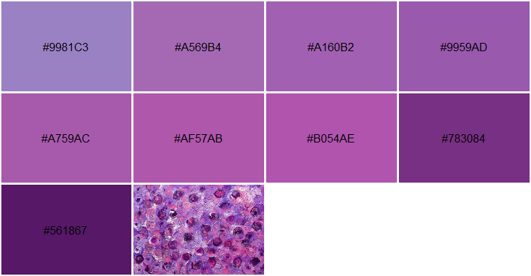

The imgpalr package makes it easy to create color palettes from image files.
- Choose the type of color palette to derive from an image: qualitative, sequential or divergent.
- Quantiles of an image color distribution can be trimmed.
- Near-black or near-white colors can be trimmed in RGB space independent of trimming brightness or saturation distributions in HSV space.
- Creating sequential palettes also offers control over the order of HSV color dimensions to sort by.
Installation
Install the CRAN release of imgpalr with
install.packages("imgpalr")Install the development version from GitHub with
# install.packages("remotes")
remotes::install_github("leonawicz/imgpalr")Examples
The main function is image_pal. It accepts PNG, JPG, BMP or GIF (first frame) images either from disk or URL. It returns a vector of colors defining a palette based on the image and your other function arguments. You can also set plot = TRUE to plot a preview of the palette, which includes the source image thumbnail for visual reference.
The examples below offer some typical considerations to make when deriving a color palette from an arbitrary image.
Three palette types
In this first set of examples, divergent, qualitative and sequential palettes are generated from the same image and while varying some additional settings.
library(imgpalr)
set.seed(1)
x <- paste0(system.file(package = "imgpalr"), "/",
c("blue-yellow", "purples", "colors"), ".jpg")
# Three palette types, one image
# A divergent palette
image_pal(x[1], type = "div",
saturation = c(0.75, 1), brightness = c(0.75, 1), plot = TRUE)

# A sequential palette
image_pal(x[1], type = "seq", k = 2, saturation = c(0.75, 1),
brightness = c(0.75, 1), seq_by = "hsv", plot = TRUE)
A dominant hue
In this test image, hue varies over a narrow range. A sequential palette is sensible here, but not necessarily best sorted by hue. Doing so does still show a perceivable order to the colors, but it is much more difficult to discern. Sorting the palette first by saturation or brightness makes a much better sequential palette in this case.
image_pal(x[2], type = "seq", seq_by = "hsv", plot = TRUE)
image_pal(x[2], type = "seq", seq_by = "svh", plot = TRUE)
image_pal(x[2], type = "seq", seq_by = "vsh", plot = TRUE)
Several hues
Using an image with several prominent hues, a divergent palette is not sensible here. A sequential is likely best sorted by hue.
Note in the second image below, you can also set quantize = TRUE to show a color-quantized reference thumbnail image based on the derived palette. This makes use of the image_quantmap function. Rather than only quantizing the image, it does so while also mapping the colors of any image to an arbitrary color palette based on nearest distances in RGB space.


Palette generation uses k-means clustering; results are different each time you call image_pal. If the palette you obtain does not feel right, even with fixed arguments you can run it again to obtain a different palette. Depending on the settings and the nature of the source image, it may change quite a bit. If you need a reproducible palette, set the seed argument. In the example above, the seed was set globally to avoid having to set it in each call to image_pal.
Quantize and remap image colors
You can quantize the colors in an image using image_quantmap directly. Choose any vector of colors. Each pixel has its color mapped to whichever of these colors it is closest to in RGB space. The RGB array is returned. You can plot the image with the palette.
x <- system.file("blue-yellow.jpg", package = "imgpalr")
pal <- c("black", "navyblue", "dodgerblue", "yellow")
a <- image_quantmap(x, pal, k = 7, plot = TRUE)
str(a)
#> num [1:317, 1:400, 1:3] 0 0 0 0 0 0 0 0 0 0 ...This works well if you want to quantize the colors to colors a short distance away in RGB space, but if you want to also swap them out for very different colors, this should be a two step process. If you provide an equal-length vector of colors to the pal2 argument, these colors will replace those in pal after the initial quantization.
pal2 <- c("darkred", "darkgreen", "tomato", "orange")
a <- image_quantmap(x, pal, pal2, k = 7, plot = TRUE, show_pal = FALSE)
Note: This function can be very slow for large k and/or larger images.
Related resources
There is also the RImagePalette package on CRAN, which uses the median cut algorithm for finding they dominant colors in an image.
imgpalr was originally inspired by the paletter package on GitHub. Both packages use k-means clustering to find key image colors, but take some different approaches in methods for assembling color palettes.
The palette preview (without the thumbnail addition) is based off of scales::show_col, which is a convenient function for plotting palettes. You can also use pals::pal.bands to do the same using a different visual layout.
If you want to directly manipulate the color properties of an image for its own sake rather than derive color palettes for other purposes, you can do so using the magick package, which provides bindings to the ImageMagick library.
Please note that the imgpalr project is released with a Contributor Code of Conduct. By contributing to this project, you agree to abide by its terms.